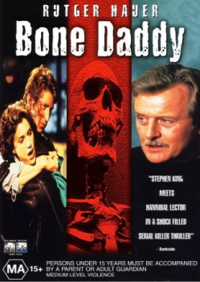

Country:United States, 90 minutes
Spoken languages:
Genres:Thriller, Crime, Horror
Director(s):Mario Philip Azzopardi
Writer(s):Tom Szolossi
Video Codec:Unknown
Number: 1653


Certification:
Storyline:
Doctor Palmer, a former pathologist, wrote a fictional book based on his real cases. In the book, the madman gets caught, but in reality he is still uncaught. After the book is released, Palmer's editor is kidnapped. Palmer soon is sent a present containing a page of his book, and a bone from his editor. Together with the police, Palmer tries to find his editor, who might still be alive. In addition, his own son becomes one of the main suspects. Written by Julian Reischl
Cast:

Medium: Original DVD,
Comments: Part of: Midnight Madness - 20 Movie Collection
Loaned: No
Aspect ratio: Unknown